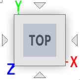

Overview
Settings
When MapBoards Pro (MBP) is first installed, there are default settings. When you invoke MapBoards Pro on a model, the Lumber tab will display a list of Board Types found in the model. A board type is the pairing of material type and board thickness (height). Material type refers to either the physical material or the appearance base selected in Use Appearance, found in the options tab. All components are grouped by their material type and thickness. Each unique group results in a board type entry in the list presented on the Lumber tab
The board type’s thickness, by default, is the shortest dimension of the matching components. When possible, an Alternate Thickness, taken from the width of the matching components is made available in a dropdown list for the Height.
With each board type there are two dimensions, width and length, which will be used as the default board size when creating a map. The first time a material type is encountered these values will be set large enough to accommodate the largest component of that board type. The Options tab will reveal these default settings. If you make any changes to these default dimensions or settings, they will persist the next time you invoke MBP on this model.
If you want the current settings to be the default on all models being opened for the first time, you can press the Save as Default button in the Options tab. In addition to making the settings in the Option tab the default, it will also make the board type dimensions the default for the respective board types.
Board Dimensions
The dimension settings for each board type, Width (vertical Y direction) and Length (the horizontal X direction), define the default targeted boards dimensions. When MBP is run, it will create enough boards with these dimensions to accommodate the mapping of all the component bodies matching this board type. You should configure the orientation, either portrait mode (larger width) or landscape mode (larger length), to match the targeted machine you will be manufacturing your model on.
Using just these default board dimensions is a good starting point and may be all you will ever need. However, MapBoards Pro offers the ability to create multiple dimensions for a board type. Using Material Management, you can create a finite list of dimensional boards for each board type. This can be shared across all models.
Board Arrangements
Boards are arranged using one of three arrangement types available using the Arrange Type option. Three arrangement types use a rectangular bounding box of the components to calculate the layouts, not the actual shape. These are useful to match your needs for rip or cross cuts since the components will be aligned with the board grain direction.
New in the Plus version, a fouth arrangement type, Arrange using True Shapes of components, uses Fusion 360’s native arrange functionality to perform true nesting of components on boards. This option provides full rotation and part-in-part for the best possible material utilization. See Arrange Type for details.
Grain Direction
MBP deals with Grain Direction in a number of ways. Firstly, the dimensions of the target boards include a directional button used to toggle between the vertical Y direction or the horizontal X direction . Besides the Board Types list on the Lumber tab, you can also optionally create and manage stock using Material Management. These lumber lists also have a selectable grain direction for each defined board.
When MBP arranges components on a board it will align the long edge of a component with the targeted board’s grain direction by default, with a few exceptions:
If the option Can Rotate is selected, a component may have its long edge rotated perpendicular to the targeted board grain direction. This will only occur if it would better utilize space or if none of the remaining components would fit an available space with the component long edge and board grain aligned.
When a component is selected, it is displayed in the selection table with the option to rotate the selected component. When the rotate option is selected, this will force the component to be rotated with its long edge perpendicular to the board grain direction.
When the Automatic Grain Alignment option is set, components with a 3D appearance will have their 3D grain aligned with the target board grain. When modeling, you can rotate the 3D grain as desired, and the corresponding component will be mapped to the target board and aligned with its grain.
Modifying Created Map
Once selected, a component can be flipped by right-clicking and selecting the Flip command from the context menu. This will flip the component in place, maintaining alignment with the board grain direction.
Once the map is created, you can modify the location and rotation of a component within or between boards a couple of ways:.
Click on the Top face of the orientation cube  located in the upper right corner of the window to align the map facing forward. You can then slide the component to the desired location within or between boards. Rotation is not possible using this method.
or
Click on the Top face of the orientation cube then select the component you want to move. Right click and select the Unsurpassed Joint command, double click on the displayed joint, then move and rotate the component to the desired location, pressing enter when complete. You can then hide the joint by selecting the component, right click, and selecting the Suppress Joint command.
A post-mapping task Rearrange Boards is available to compress the arrangement of existing components on a board providing full rotation and placement using Fusion 360’s native arrange functionality. The task presents a list of components on the board with options to prioritize the order, helping with part-in-part placement, and a flip option to control which face faces up.
Tasks on Created Map
It is recommended that you always create a map with component bodies first. You can then take advantage of the post-mapping tasks on the created map. Performing these post-mapping tasks is more efficient for performance and provides you with more options, such as working with modified maps as described above.
After creating or modifying a created map you may want to:
Label or re-label the map to align the labeling text with the moved components.
Create a report with images of the mapped boards in a map, a component list, and the required board types and quantities to create the design. Selecting the Show option for this task opens the created html file in your default browser for viewing.
Create a Manufacturing Model with setup for one or more created boards to continue with the manufacturing process. This would include creating toolpaths, simulating, then exporting the toolpaths to drive your machine setup.
Export the created maps as flat panels in either DXF or SVG files to be used in other software or machine setups.
Multiple Maps
You may want to create and keep more than one map. Maps are created under the top-level component maps in the browser tree. To create and keep two or more maps, you must first hide the existing map by turning off the visibility icon. This will prevent the map from being deleted when MBP is run. Having more than one map allows you to subdivide your model into separate maps and simplify the manufacturing process. For example, you may want to create a map for each board type using Selection Support. To do this, uncheck Include Entire Model and either select the individual component or branches in the browser tree, or select a board type in the list of board types. When MBP is run, it will only include those selected components to be mapped.
What’s Next
That is the general overview. Try things out on some simple models. There is much more functionality available, and you can browse the table of contents in this document or use the Quick Search option to find a description of an option or a topic of interest.